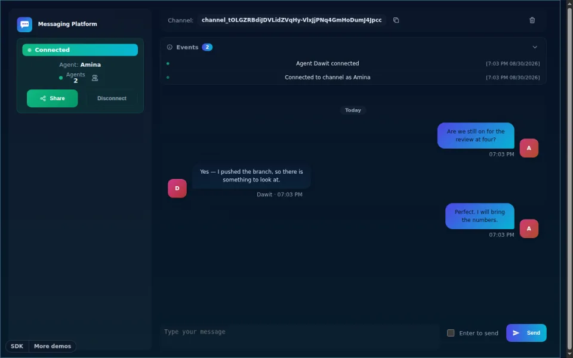
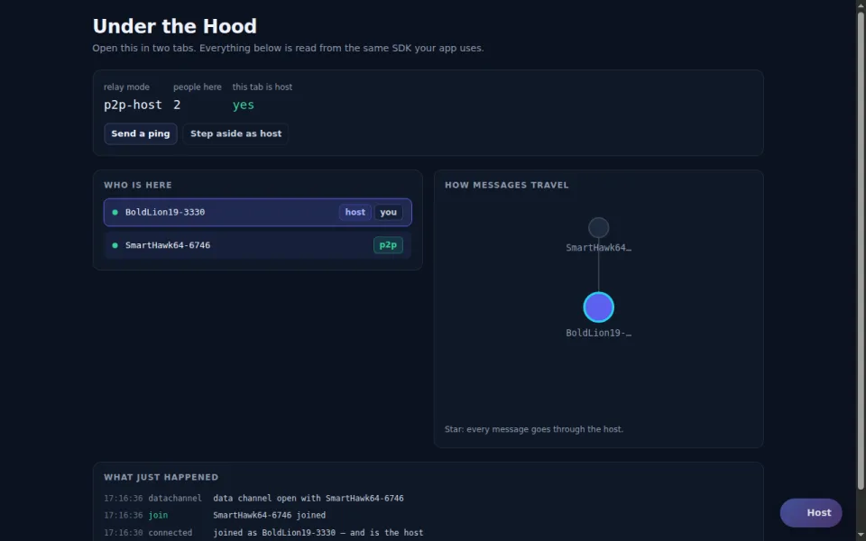
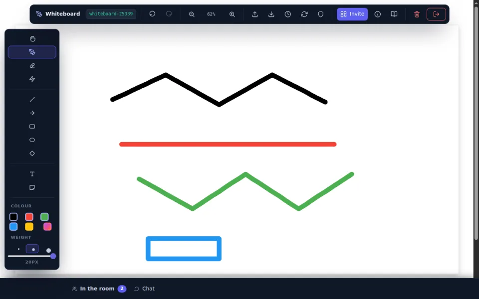
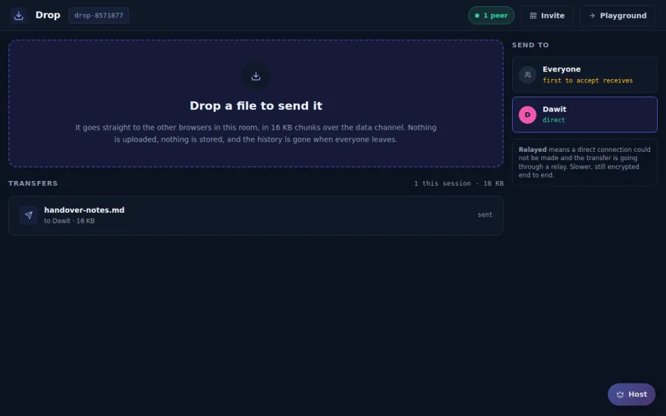
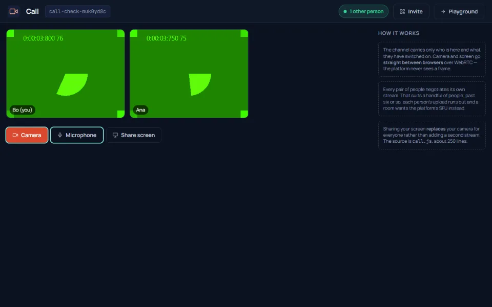
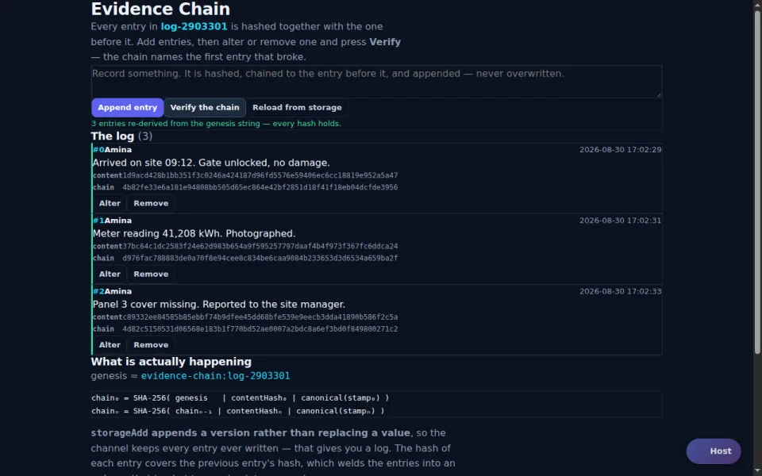

Public beta: free, no card required
Build realtime apps
without building realtime infrastructure.
Messaging, presence, shared state and WebRTC through one SDK and a managed backend. Browsers, servers, AI agents and games on one channel.
This page joins one live channel; whoever else is reading it appears here.
// install: the two <script> tags in the quickstart, no build step const API = 'https://hmdevonline.com/messaging-platform/api/v1/messaging-service'; const agent = new AgentConnection(); agent.addEventListener('message', e => e.response.data .filter(m => m.type === 'chat-text') .forEach(m => console.log(m.from, 'says', m.content))); agent.addEventListener('connect', e => e.response.status === 'success' && agent.sendMessage({ content: 'Hello from the browser!' })); agent.connect({ api: API, apiKey, channelName: 'quickstart-room', channelPassword: 'channel-password', agentName: 'browser-user', autoReceive: true });
# pip install "git+https://github.com/HaithamMubarak/messaging-platform-sdk.git@develop#subdirectory=agents/python-agent" API = "https://hmdevonline.com/messaging-platform/api/v1/messaging-service" agent = AgentConnection.with_api_key(API, os.environ["MESSAGING_PLATFORM_API_KEY"]) agent.connect("quickstart-room", "channel-password", "python-agent") class Printer(AgentConnectionEventHandler): def on_message_events(self, events): for e in events: if e.get("type") == "chat-text": print(e.get("from"), "says", e.get("content")) agent.receive_async(Printer()) agent.send_message("Hello from Python!")
// implementation project(':agents:java-agent'), built from source (see the quickstart) AgentConnection agent = new AgentConnection( "https://hmdevonline.com/messaging-platform/api/v1/messaging-service", System.getenv("MESSAGING_PLATFORM_API_KEY")); agent.connect(ConnectConfig.of("quickstart-room", "channel-password", "java-agent")); agent.receiveAsync(events -> events.stream() .filter(e -> e.getType() == EventMessage.EventType.CHAT_TEXT) .forEach(e -> System.out.println(e.getFrom() + " says " + e.getContent()))); agent.sendMessage("Hello from Java!");
Get started
Choose where to start.
What you can build
Six primitives. One connection.
Pick one to see the call, then open the demo that teaches it.
Messages and events
Broadcast to a room, address one person, or send fast-changing state as ephemeral messages.
agent.sendMessage({ content: 'hello, room' });
Who is here
Joins, leaves, and the ones that vanish without saying goodbye; who hosts, and who takes over.
agent.addEventListener('agent-connect', e => showOnline(e.agentName));
Shared state
Every stroke on every screen, stored on the channel for whoever joins later.
agent.storagePut({ storageKey: 'board', content: board });
Files, browser to browser
Send a file straight to another browser, in chunks, peer to peer, checked on arrival.
rtc.sendFile(peerId, file);

Video and audio calls
Signalling and TURN handled; the media flows peer to peer.
rtc.createStreamOffer(peerId, { stream });
Records nobody can rewrite
A hash-chained log with signed receipts; change one entry and verification names it.
agent.attest({ chainKey, kind, contentHash }, keepReceipt);
Why not build it yourself?
You could. Here is the list.
- A WebSocket service, with a fallback for networks that block it
- API keys and short-lived browser credentials
- Deciding who may join: managed channels admit only the people your backend lists, and removing someone takes effect at once
- Deciding who is host: a host your backend names, not whoever reached the room first
- Reconnect and resume without losing or duplicating messages
- Presence, including the ones who never say goodbye
- Ordering, persistence and replay from an offset
- WebRTC signalling, plus STUN/TURN for the peers that need it
…plus rate limits, metering and client libraries for every language you ship. Run your first one →
AI agents
Put your agent on the same channel as your users.
Stream answers as they generate, ask a person to approve, report tool progress. Bring your own model; the channel is the realtime layer around it.
Built with the platform
Products you can open today.
The products load from the catalogue: see all apps.
Two clients talking in five minutes.
Free during the public beta, no card. Paid plans are priced in the open before they apply.
- Sign in and get a key
- Install and connect
- Run it twice, watch them talk